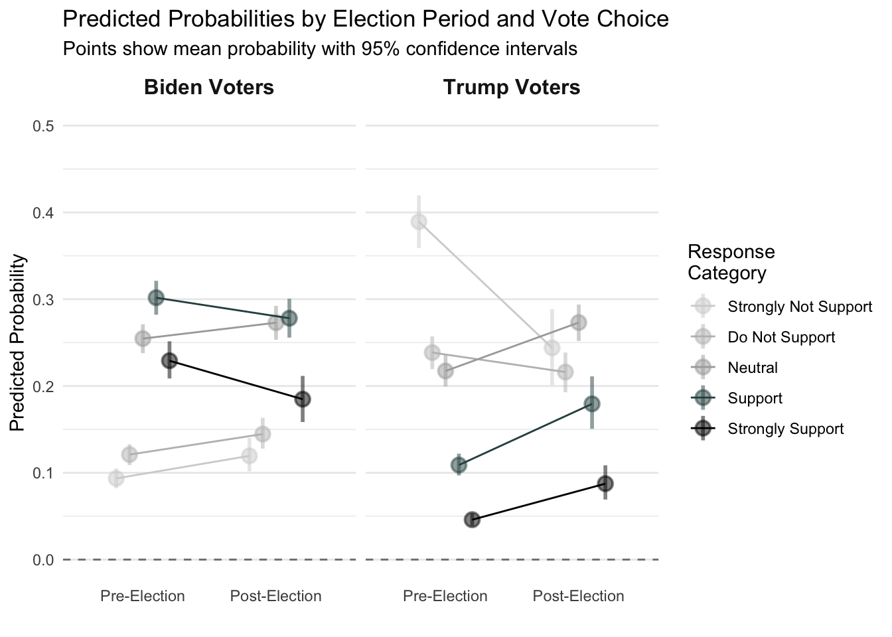
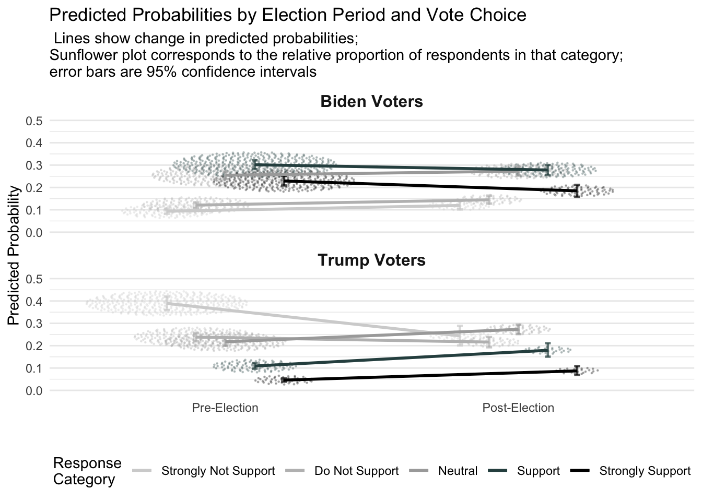
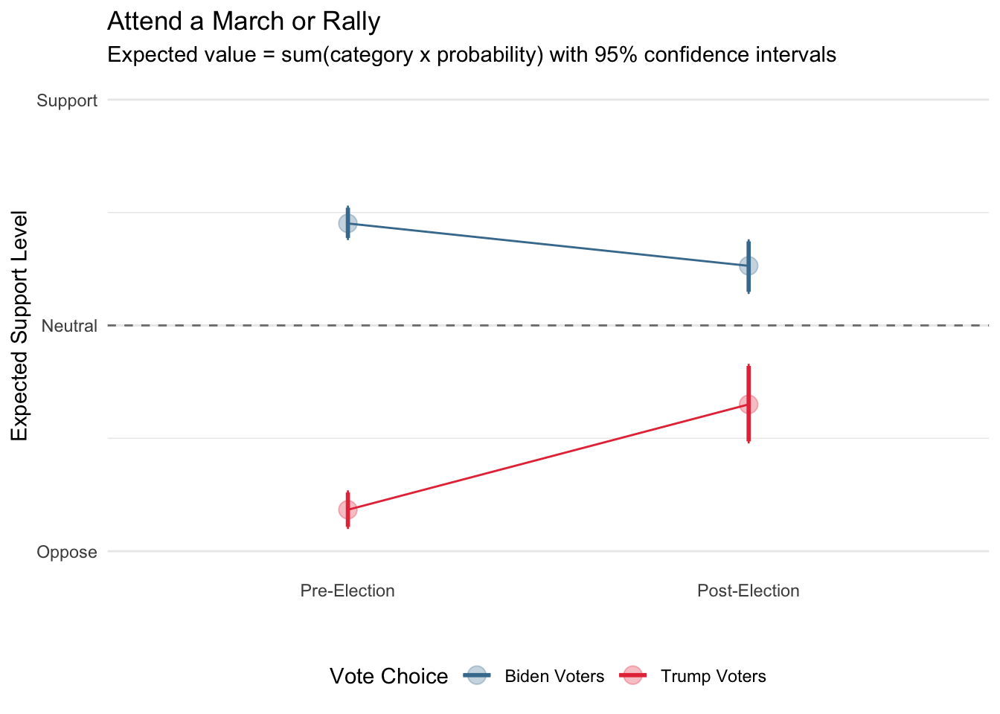
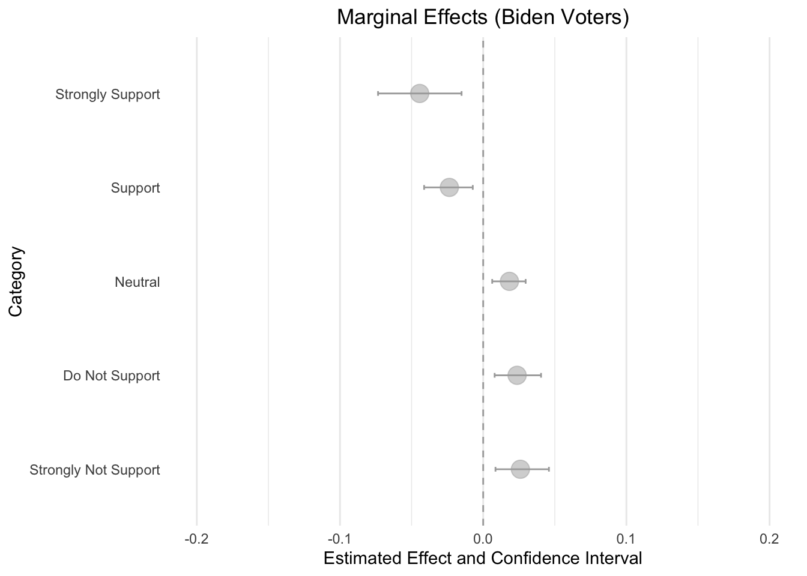
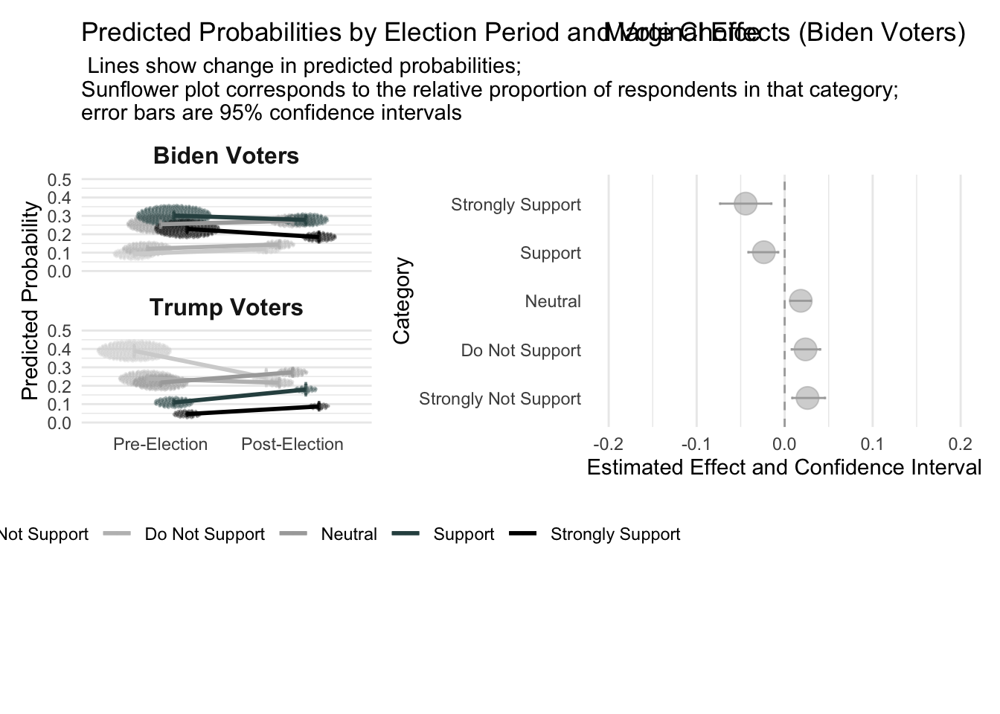

Extending the Binary Model: Ordered Logit and Probit
The Ordered Logit
This summary follows your assigned reading in Long (1997). One should only use an ordered parameterization when we have categorical data that are ordered – e.g., “like” versus “dislike.” Some data can be ordered, even if they are theoretically multidimensional; others should be modeled differently Examples of ordinal data are PID, Ideology (social and economic dimensions). Or “How much do you agree or disagree with the following item?” from “1” Strongly Disagree to “5” Strongly Agree.
Why not OLS?
Ordered, non-interval level data may violate the assumptions of the classical linear regression model. First, there is non-constant variance. Predictions may be non-sensical (i.e., we predict things outside of the observed bounds). And the category distances are theoretically not equally spaced.
Proportional Odds
- \(y_{latent}\), where \(y_{obs} \in (1,2,3,...k)\).
Instead of the variable being 0/1, it is not more than two categories that are ordered. Assume we knew \(y_{latent}\) and would like to map that to observing a particular category. We’ll map the latent variable to the outcome, but now we’ll use multiple cut points, \(\tau\) instead of one that is \(\tau = 0\)
Assume that we observe the category based on its orientation to a series of cutpoints, where
\[y_i=m: \tau_{k-1}\leq y_{latent} < \tau_{k}\]
The Measurement Model
The \(\tau\) parameters represent a series of thresholds that map the latent variable onto the categorical variable.
In \(\texttt{MASS}::\texttt{polr}()\) these are “zeta”
A (Long 1997, 123)
\[y_{obs} = \begin{array}{lr} A, \tau_0=\infty \leq y_{latent}<\tau_1\\ B, \tau_1\leq y_{latent}<\tau_2\\ C, \tau_2\leq y_{latent}<\tau_3\\ D, \tau_3\leq y_{latent}<\tau_4\\ E, \tau_4\leq y_{latent}<\tau_5=\infty \end{array} \]
The Structural Model
\[y_{latent}=\beta_0 + \beta_1x_i +...\sum^{J}_{j =1} \beta_j x_{ij}+e_i\]
\[y=X\beta+e\]
Where each row vector of Xand any \(j+1\) predictors. In the ordered logit or probit parameterization, we do not estimate the intercept, \(\beta_0\), because it is not uniquely identified from the cutpoints.
So what we’re doing is defining \(K-1\) cutpoints, the slicing up the latent distribution into discrete categories.
\[\begin{eqnarray*} pr(y_{i}=1|X_i) & = & pr(\tau_0 \leq y_{i,latent}<\tau_1)|X_i) \\ & = & pr(\tau_0 \leq X_i b+e_i<\tau_1)|X_i) \\ & = & pr(\tau_0 - X_ib \leq e_i<\tau_1-X_ib)|X_i) \\ & = & pr(\tau_1-X_ib)|X_i)-pr(\tau_0 - X_ib|X_i) \\ & = & F(\tau_1-X_ib)-F(\tau_0 - X_ib) \\ \end{eqnarray*}\]
F denotes the CDF, then for the ordered probit:
The last row is simplified because the probability of the CDF evaluated from \(-\infty\) to \(\infty\) is 1, so the first term becomes 1. Any CDF is plausible, such as the logit, in which case we have,
\[\begin{eqnarray*} Pr(y_{i}=k|X_i) & = &\Phi(\tau_1-\alpha-\beta X) \\ & = & \Phi(\tau_2-\alpha-\beta X)-\Phi(\tau_1-\alpha-\beta X) \\ & = & \Phi(\tau_3-\alpha-\beta X)-\Phi(\tau_2-\alpha-\beta X)\\ & = & 1-\Phi(\tau_4-\alpha-\beta X)\\ \end{eqnarray*}\]
Or if F is the logistic CDF, then we have the ordered logit:
\[\begin{eqnarray*} Pr(y_{i}=k|X_i) & = &Logit(\tau_1-\alpha-\beta X) \\ & = & Logit(\tau_2-\alpha-\beta X)-Logit(\tau_1-\alpha-\beta X) \\ & = & Logit(\tau_3-\alpha-\beta X)-Logit(\tau_2-\alpha-\beta X)\\ & = & 1-Logit(\tau_4-\alpha-\beta X)\\ \end{eqnarray*}\]
- \(F\) generically to mean the CDF; and \(f\) to denote the PDF.
The Likelihood
Recall, that the probability of being in the \(k\)th category for the \(i\)th subject is,
\[\begin{eqnarray*} pr(y_{i}=k|X_i) & = & F(\tau_k-\alpha-X_i\beta)-F(\tau_{k-1}-\alpha-X_i\beta) \\ \end{eqnarray*}\]
And the likelihood of the ordered logit or probit model is the joint probability of being in each category, so we need to calculate the likelihood (\(L(y|\theta)\)) as
\[Pr(y_{i}=1|X_i)\times pr(y_{i}=2|X_i) \times pr(y_{i}=3|X_i) \times....pr(y_{i}=K|X_i)\].
This is just the joint probability for category membership, for each subject, so
\[\begin{eqnarray*} Pr(y_{i}|X_i) & = & \prod_{k=1}^K F(\tau_k-\alpha-X_i\beta)-F(\tau_{k-1}-\alpha-X_i\beta) \\ \end{eqnarray*}\]
This only refers to the probability space for a single subject. Since the likelihood is \(\prod_{i=1}^N p_i\), we need to calculate the joint probability for each subject, which is,
\[\begin{eqnarray*} pr(y|X) & = & \prod_{i=1}^N \prod_{k=1}^K F(\tau_k-\alpha-X_i\beta)-F(\tau_{k-1}-\alpha-X_i\beta) \\ L(\beta \tau | y, X)& = & \prod_{i=1}^N \prod_{k=1}^K F(\tau_k-\alpha-X_i\beta)-F(\tau_{k-1}-\alpha-X_i\beta) \\ \end{eqnarray*}\]
Let’s again use the log likelihood
\[\begin{eqnarray*} Loglik(\beta \tau | y, X)& = & \sum_{i=1}^N \sum_{k=1}^K log[F(\tau_k-\alpha-X_i\beta)-F(\tau_{k-1}-\alpha-X_i\beta)] \\ \end{eqnarray*}\]
- Like the binary case: \(x \rightarrow y_{latent} \rightarrow y_{obs}\).
The only thing that is different is that instead of a single cutpoint – at 0 – we have a series of cutpoints, corresponding to the number of categories minus 1.
A Crucial Assumption: Parallel Lines
The parallel lines assumption means that the effect of \(X\) is the same across all categories.
Each line corresponds to a log odds of combining categories into a cumulative log odds where the lines are parallel, or the odds ratios are constant, they are proportional. The distance between the lines is constant, which means that the effect of \(X\) is the same across all categories.
Estimation
Let’s estimate an ordered logit model in R, from the MASS package. Data are collected pre or post election, and we want to see if support for electoral contestation behavior (here, attending a march) changes in support over this period – for Trump voters versus Biden voters. This is specified to examine whether support for contestation varies depending upon electoral functions; a winner-loser effect.
library(dplyr)
library(tidyr)
library(MASS)
download.file("https://raw.githubusercontent.com/crweber9874/advancedRegression/main/data/wss20.rda",
destfile = "wss20.rda")
## Load into session
load("wss20.rda")
wss20 = wss20 |>
pivot_wider(
names_from = contestation,
values_from = contestation_value
)
sample_df <- wss20 |>
mutate(contestation = rowMeans(cbind(attend_march, criticize_election, burn_flag, court, recount), na.rm =
TRUE), # Construct a continuous scale
vote_trump = presvote_trump_2020,
authoritarianism = rowMeans(cbind(auth_1, auth_2, auth_3, auth_4), na.rm = TRUE),
republican = ifelse(party_identification3 == 3, 1, 0),
democrat = ifelse(party_identification3 == 1, 1, 0),
independent = ifelse(party_identification3 == 2, 1, 0),
libcon = (ideology5 - 1)/4,
prepost = ifelse(prepost == "post", 1, 0)
)
my_model = polr(as.factor(attend_march) ~ prepost*vote_trump ,
data = sample_df)
my_model |> summary()Call:
polr(formula = as.factor(attend_march) ~ prepost * vote_trump,
data = sample_df)
Coefficients:
Value Std. Error t value
prepost -0.2734 0.09635 -2.837
vote_trump -1.8204 0.08311 -21.904
prepost:vote_trump 0.9590 0.16672 5.752
Intercepts:
Value Std. Error t value
1|2 -2.2704 0.0695 -32.6655
2|3 -1.2953 0.0598 -21.6506
3|4 -0.1200 0.0538 -2.2319
4|5 1.2149 0.0610 19.9185
Residual Deviance: 8636.318
AIC: 8650.318
(719 observations deleted due to missingness)There is clearly an interaction effect – support varies depending on whether the observation was before or after the election and whether the respondent voted for Trump or Biden. The sign of the lower order and interaction terms seems to indicate that Trump supporters are more supportive, post-election; Biden voters are more supporting in the pre-election. But how should we interpret this.
In the regressionEffects package, there are functions to generate predicted probabilities from an ordered logit or probit model. We can use these to generate predicted probabilities for each category, across levels of prepost and vote_trump. If you first install the devtools package, you can install regressionEffects from GitHub:
Instead of loading the entire package into your workspace with devtools::, this allows one to estimate a function from within the package.
# devtools::install_github("crweber9874/regressionEffects")There’s nothing terribly complex about the functions in the package. They basically just provide a workflow that includes wrappers for using other packages, like MASS, dplyr, and ggplot2.
First, create a design matrix corresponding to the things (from the model) that you’d like to predict. Here, let’s predict the probability of attending a march, across levels of prepost and vote_trump.
library(regressionEffects)
design_matrix <- expand.grid(
prepost = c(0,1),
vote_trump = c(0,1)
)
predictions <- predict_ordinal_probs(
design_matrix = design_matrix,
model = my_model,
n_draws = 1000)
cat("The dimensions of this matrix:\n",
dim(predictions)[1], "rows and",
dim(predictions)[2], "columns.")The dimensions of this matrix:
20000 rows and 5 columns.head(predictions)# A tibble: 6 × 5
draw prepost vote_trump category probability
<int> <dbl> <dbl> <chr> <dbl>
1 1 0 0 1 0.0925
2 1 0 0 2 0.134
3 1 0 0 3 0.256
4 1 0 0 4 0.292
5 1 0 0 5 0.225
6 2 0 0 1 0.0913Let’s now create summaries.
summarize_predictions(predictions) |> head()# A tibble: 6 × 8
prepost vote_trump category mean_prob median_prob sd_prob lower_ci upper_ci
<dbl> <dbl> <chr> <dbl> <dbl> <dbl> <dbl> <dbl>
1 0 0 1 0.0935 0.0934 0.00575 0.0821 0.105
2 0 0 2 0.121 0.121 0.00624 0.109 0.133
3 0 0 3 0.255 0.255 0.00880 0.238 0.271
4 0 0 4 0.302 0.301 0.0102 0.282 0.321
5 0 0 5 0.229 0.229 0.0106 0.209 0.251
6 0 1 1 0.389 0.389 0.0152 0.359 0.420# Create the plot
summarize_predictions(predictions) |>
mutate(
prepost_label = factor(prepost,
levels = c(0, 1),
labels = c("Pre-Election", "Post-Election")),
vote_trump_label = factor(vote_trump,
levels = c(0, 1),
labels = c("Biden Voters", "Trump Voters")),
category = factor(category)
) %>%
ggplot(aes(x = prepost_label, y = mean_prob, color = category, group = category)) +
geom_hline(yintercept = 0, linetype = "dashed", color = "gray50") +
geom_pointrange(aes(ymin = lower_ci, ymax = upper_ci),
position = position_dodge(width = 0.5),
size = 0.8,
linewidth = 1,
alpha = 0.5) +
geom_line( position = position_dodge(width = 0.5)) +
facet_wrap(~vote_trump_label, ncol = 2) +
labs(
x = "",
y = "Predicted Probability",
color = "Response\nCategory",
title = "Predicted Probabilities by Election Period and Vote Choice",
subtitle = "Points show mean probability with 95% confidence intervals"
) +
theme_minimal() +
theme(
legend.position = "right",
panel.grid.major.x = element_blank(),
strip.text = element_text(size = 12, face = "bold")
) +
scale_y_continuous(limits = c(0, 0.5), breaks = seq(0, 0.5, 0.1)) +
scale_color_manual(values = c("1" = "lightgrey", "2" = "grey", "3" = "darkgrey", "4" = "darkslategrey", "5" = "black"),
labels = c("1" = "Strongly Not Support", "2" = "Do Not Support", "3" = "Neutral", "4" = "Support", "5" = "Strongly Support"))
This is useful but sort of messy, because we don’t know how many observations are in each of the cells. All we can see is that support for attending a march increases after the election (for Trump voters), but the opposite occurs for Biden voters. Let’s scale the points by the number of observations.
# library(tidyr)
# ## Construct the scale for observed_counts
# observed_counts <- sample_df %>%
# group_by(prepost, vote_trump, attend_march) |>
# summarise(n = n(), .groups = "drop") |>
# rename(category = attend_march) %>%
# mutate(category = factor(category)) |>
# filter(!is.na(vote_trump))
#
#
# ## Filter Biden Voter
# plot_dat = summarize_predictions(predictions) |>
# mutate(
# category = factor(category)
# ) |>
# left_join(observed_counts, by = c("prepost", "vote_trump", "category")) %>%
# mutate(
# prepost_label = factor(prepost,
# levels = c(0, 1),
# labels = c("Pre-Election", "Post-Election")),
# vote_trump_label = factor(vote_trump,
# levels = c(0, 1),
# labels = c("Biden Voters", "Trump Voters")),
# n_scaled = n / sum(n)
# ) |>
# filter(vote_trump ==0)
#
# plotSunflower(plot_dat,
# sunflower_data = observed_counts)# devtools::load_all()
#
# # Data preparation (done once, outside the function)
# observed_counts <- sample_df |>
# group_by(prepost, attend_march) %>%
# summarise(n = n(), .groups = "drop") %>%
# rename(category = attend_march) %>%
# mutate(category = factor(category)) %>%
# filter(!is.na(vote_trump)) |>
# filter(vote_trump == 0)
#
#
# pred_summary <- summarize_predictions(predictions) %>%
# mutate(category = factor(category))
#
# plot_data <- sample_df %>%
# filter(!is.na(vote_trump)) %>%
# mutate(category = factor(attend_march)) %>%
# left_join(pred_summary %>%
# dplyr::select(prepost, vote_trump, category, mean_prob),
# by = c("prepost", "vote_trump", "category")) %>%
# mutate(
# prepost_label = factor(prepost, levels = c(0, 1),
# labels = c("Pre-Election", "Post-Election")),
# vote_trump_label = factor(vote_trump, levels = c(0, 1),
# labels = c("Biden Voters", "Trump Voters"))
# )
#
# pred_summary <- pred_summary %>%
# left_join(observed_counts, by = c("prepost", "vote_trump", "category")) %>%
# mutate(
# prepost_label = factor(prepost, levels = c(0, 1),
# labels = c("Pre-Election", "Post-Election")),
# vote_trump_label = factor(vote_trump, levels = c(0, 1),
# labels = c("Biden Voters", "Trump Voters"))
# )
#
# # Then create the plot
# plot_predictions(plot_data |> filter(vote_trump == 0), pred_summary)library(vayr)
library(dplyr)
observed_counts <- sample_df %>%
group_by(prepost, vote_trump, attend_march) %>%
summarise(n = n(), .groups = "drop") %>%
rename(category = attend_march) %>%
mutate(category = factor(category)) |>
filter(!is.na(vote_trump))
# Get predictions for joining
pred_summary <- summarize_predictions(predictions) %>%
mutate(category = factor(category))
plot_data <- sample_df %>%
filter(!is.na(vote_trump)) %>%
mutate(category = factor(attend_march)) %>%
left_join(pred_summary %>% dplyr::select(prepost, vote_trump, category, mean_prob),
by = c("prepost" = "prepost", "vote_trump" = "vote_trump", "category" = "category")) %>%
mutate(
prepost_label = factor(prepost,
levels = c(0, 1),
labels = c("Pre-Election", "Post-Election")),
vote_trump_label = factor(vote_trump,
levels = c(0, 1),
labels = c("Biden Voters", "Trump Voters"))
)
# Create the plot
pred_summary %>%
left_join(observed_counts, by = c("prepost", "vote_trump", "category")) %>%
mutate(
prepost_label = factor(prepost,
levels = c(0, 1),
labels = c("Pre-Election", "Post-Election")),
vote_trump_label = factor(vote_trump,
levels = c(0, 1),
labels = c("Biden Voters", "Trump Voters"))
) %>%
ggplot(aes(x = prepost_label, y = mean_prob, color = category, group = category)) +
# Sunflowers centered at predicted probabilities
geom_point(data = plot_data,
aes(x = prepost_label, y = mean_prob, color = category),
position = position_sunflowerdodge(width = 0.5, density = 50, aspect_ratio = 5),
size = 0.2, alpha = 0.25, inherit.aes = FALSE) +
geom_errorbar(aes(ymin = lower_ci, ymax = upper_ci),
position = position_dodge(width = 0.5),
width = 0.1, linewidth = 0.8, alpha = 0.7) +
geom_line(position = position_dodge(width = 0.5), linewidth = 1) +
geom_errorbar(aes(ymin = lower_ci, ymax = upper_ci, fill = category),
position = position_dodge(width = 0.5),
alpha = 0.2, color = NA) +
facet_wrap(~vote_trump_label, ncol = 1) +
labs(
x = "",
y = "Predicted Probability",
color = "Response\nCategory",
title = "Predicted Probabilities by Election Period and Vote Choice",
subtitle = " Lines show change in predicted probabilities;\nSunflower plot corresponds to the relative proportion of respondents in that category;\nerror bars are 95% confidence intervals"
) +
theme_minimal() +
theme(
legend.position = "bottom",
panel.grid.major.x = element_blank(),
strip.text = element_text(size = 12, face = "bold")
) +
scale_y_continuous(limits = c(0, 0.5), breaks = seq(0, 0.5, 0.1)) +
scale_color_manual(values = c("1" = "lightgrey", "2" = "grey", "3" = "darkgrey", "4" = "darkslategrey", "5" = "black"),
labels = c("1" = "Strongly Not Support", "2" = "Do Not Support", "3" = "Neutral", "4" = "Support", "5" = "Strongly Support")) -> pointsWarning in geom_errorbar(aes(ymin = lower_ci, ymax = upper_ci, fill =
category), : Ignoring unknown aesthetics: fillpoints
library(vayr)
library(dplyr)
observed_counts <- sample_df %>%
group_by(prepost, vote_trump, attend_march) %>%
summarise(n = n(), .groups = "drop") %>%
rename(category = attend_march) %>%
mutate(category = factor(category)) |>
filter(!is.na(vote_trump))
pred_summary <- summarize_predictions(predictions) %>%
mutate(category = factor(category))
expected_values_ci <- predictions %>%
mutate(category_num = as.numeric(as.character(category))) %>%
group_by(draw, prepost, vote_trump) %>%
summarise(expected_value = sum(category_num * probability), .groups = "drop") %>%
group_by(prepost, vote_trump) %>%
summarise(
mean_expected = mean(expected_value),
lower_ci = quantile(expected_value, 0.025),
upper_ci = quantile(expected_value, 0.975),
.groups = "drop"
) %>%
mutate(
prepost_label = factor(prepost,
levels = c(0, 1),
labels = c("Pre-Election", "Post-Election")),
vote_trump_label = factor(vote_trump,
levels = c(0, 1),
labels = c("Biden Voters", "Trump Voters"))
)
# View expected values with CI
print(expected_values_ci)# A tibble: 4 × 7
prepost vote_trump mean_expected lower_ci upper_ci prepost_label
<dbl> <dbl> <dbl> <dbl> <dbl> <fct>
1 0 0 3.45 3.39 3.52 Pre-Election
2 0 1 2.18 2.11 2.26 Pre-Election
3 1 0 3.26 3.15 3.37 Post-Election
4 1 1 2.65 2.49 2.82 Post-Election
# ℹ 1 more variable: vote_trump_label <fct># Prepare raw data aligned with predicted probabilities
plot_data <- sample_df %>%
filter(!is.na(vote_trump)) %>%
mutate(category = factor(attend_march)) %>%
left_join(pred_summary %>% dplyr::select(prepost, vote_trump, category, mean_prob),
by = c("prepost" = "prepost", "vote_trump" = "vote_trump", "category" = "category")) %>%
mutate(
prepost_label = factor(prepost,
levels = c(0, 1),
labels = c("Pre-Election", "Post-Election")),
vote_trump_label = factor(vote_trump,
levels = c(0, 1),
labels = c("Biden Voters", "Trump Voters"))
)
# Expected value plot WITH confidence intervals
# Expected value plot with 1-5 scale and labeled points
ggplot(expected_values_ci, aes(x = prepost_label, y = mean_expected,
color = vote_trump_label, group = vote_trump_label)) +
# Add midpoint reference line at 3
geom_hline(yintercept = 3, linetype = "dashed", color = "gray50", linewidth = 0.5) +
# geom_ribbon(aes(ymin = lower_ci, ymax = upper_ci, fill = vote_trump_label),
# alpha = 0.2, color = NA) +
geom_line(linewidth = 0.5) +
geom_point(size = 4, alpha = 0.3) +
geom_errorbar(aes(ymin = lower_ci, ymax = upper_ci),
width = 0.005, linewidth = 1) +
labs(
x = "",
y = "Expected Support Level",
color = "Vote Choice",
fill = "Vote Choice",
title = "Attend a March or Rally",
subtitle = "Expected value = sum(category x probability) with 95% confidence intervals"
) +
theme_minimal() +
theme(
legend.position = "bottom",
panel.grid.major.x = element_blank()
) +
scale_y_continuous(
limits = c(2, 4),
breaks = 2:4,
labels = c("2" = "Oppose",
"3" = "Neutral",
"4" = "Support")
) +
scale_color_manual(values = c("Biden Voters" = "#457B9D", "Trump Voters" = "#E63946")) +
scale_fill_manual(values = c("Biden Voters" = "#457B9D", "Trump Voters" = "#E63946")) Ignoring unknown labels:
• fill : "Vote Choice"Warning: No shared levels found between `names(values)` of the manual scale and the
data's fill values.
Marginal effects.
Say are interest is in whether these changes are statistically significant at the conventional 0.05 level. We can use the predict_logit_probs() function to generate predicted probabilities from a binary logit model, and then summarize those predictions.
library(dplyr)
me = calculate_marginal_effect(
predictions,
focal_var = "prepost",
focal_contrast = c(0, 1),
moderator = "vote_trump"
)
print(me)# A tibble: 10 × 7
vote_trump category mean_effect median_effect sd_effect lower_ci upper_ci
<dbl> <chr> <dbl> <dbl> <dbl> <dbl> <dbl>
1 0 1 0.0260 0.0255 0.00963 0.00857 0.0459
2 0 2 0.0237 0.0233 0.00837 0.00799 0.0404
3 0 3 0.0183 0.0181 0.00599 0.00628 0.0296
4 0 4 -0.0236 -0.0233 0.00884 -0.0413 -0.00727
5 0 5 -0.0443 -0.0437 0.0150 -0.0734 -0.0151
6 1 1 -0.145 -0.146 0.0263 -0.196 -0.0912
7 1 2 -0.0224 -0.0218 0.00773 -0.0392 -0.00923
8 1 3 0.0558 0.0563 0.00913 0.0369 0.0723
9 1 4 0.0705 0.0703 0.0151 0.0410 0.101
10 1 5 0.0415 0.0410 0.0101 0.0232 0.0625 library(ggplot2)
# 2. Plotting the marginal effects
p <- ggplot(me |> filter(vote_trump == 0), aes(y = category, x = mean_effect)) +
geom_vline(xintercept = 0, linetype = "dashed", color = "darkgrey", size = 0.5) +
geom_errorbarh(aes(xmin = lower_ci, xmax = upper_ci),
height = 0.05,
color = "darkgrey") +
geom_point(size = 5, color = "darkgrey", alpha = 0.5) +
labs(
x = "Estimated Effect and Confidence Interval",
y = "Category",
title = "Marginal Effects (Biden Voters)"
) +
theme_minimal() +
theme(
panel.grid.major.y = element_blank(),
panel.grid.minor.y = element_blank(),
plot.title = element_text(hjust = 0.5)
) +
scale_x_continuous(limits = c(-0.2, 0.2), breaks = seq(-0.2, 0.2, by = 0.1)) +
scale_y_discrete(
labels = c(
"1" = "Strongly Not Support",
"2" = "Do Not Support",
"3" = "Neutral",
"4" = "Support",
"5" = "Strongly Support"
)
)Warning: Using `size` aesthetic for lines was deprecated in ggplot2 3.4.0.
ℹ Please use `linewidth` instead.Warning: `geom_errobarh()` was deprecated in ggplot2 4.0.0.
ℹ Please use the `orientation` argument of `geom_errorbar()` instead.# Print the plot
print(p)`height` was translated to `width`.
This gives us the marginal effect of supporting attending a march, for Trump voters versus Biden voters, from pre- to post-election. The marginal effect is just the change from pre to post for each group.
library(patchwork)
Attaching package: 'patchwork'The following object is masked from 'package:MASS':
area points + p +
plot_layout(widths = c(0.3, 0.4),
heights = c(1, 0.5))`height` was translated to `width`.